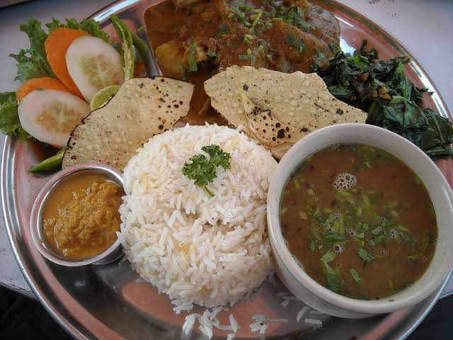

daal bhat

Chiura Tarkari

質の高いサービスが私たちのモットーです
毎日6:00、12:00、15:00に出来たてをご用意してお待ちしております。
南アジア料理に夢中な私が知っている人々は、ヒマラヤレストランに関しては2つのキャンプに分かれます。 半分は市内で最高のパキスタン料理レストランと呼んでいます。 残りの半分は、それが絶対的でプラトニックな「最高」でなくても、オーナーとシェフのカイザー・ラシュカリとのチャットで、最後の訪問以来どのような新しい料理が作られたかを見る価値があります。 ラシュカリは高度に教育された、非常に興味深く、常に不r慎な男で、最終的に彼を別の方向に導く調理への愛に気付く前に、彼の母国パキスタンの医学部に通った。 ラシュカリは1980年にここに移り、ヒューストン大学コンラッドヒルトンCで学士号と修士号を取得HI
毎日6:00、12:00、15:00に出来たてをご用意してお待ちしております。